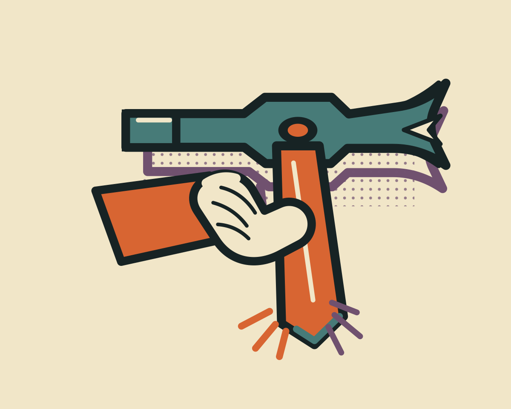
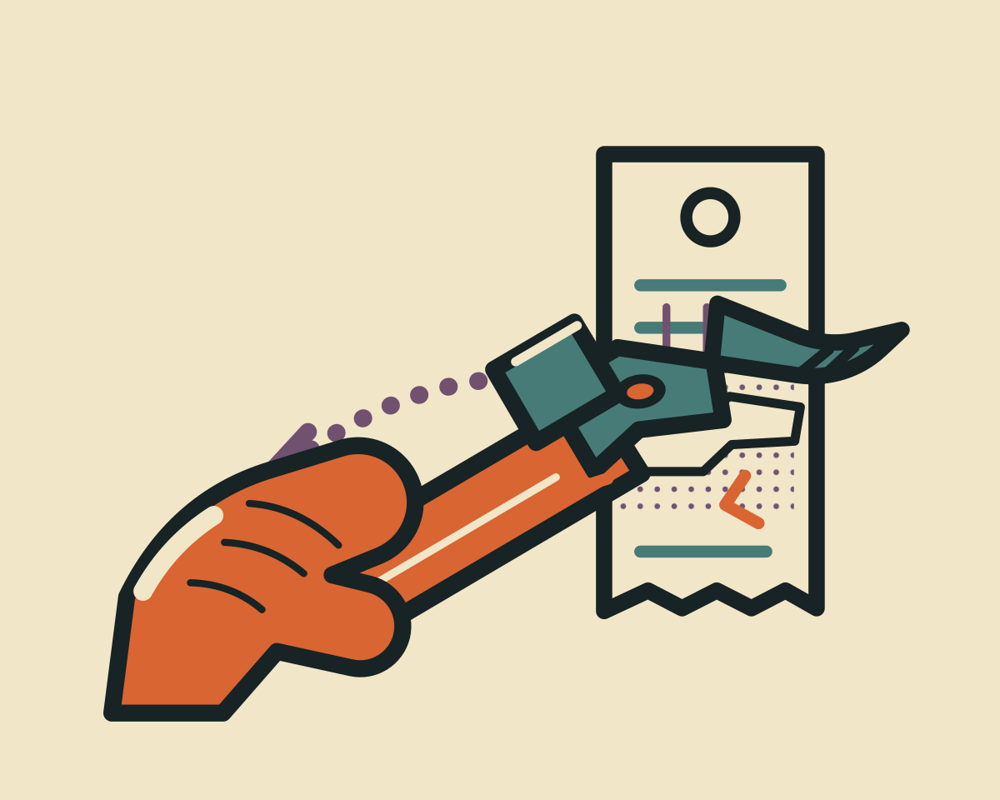
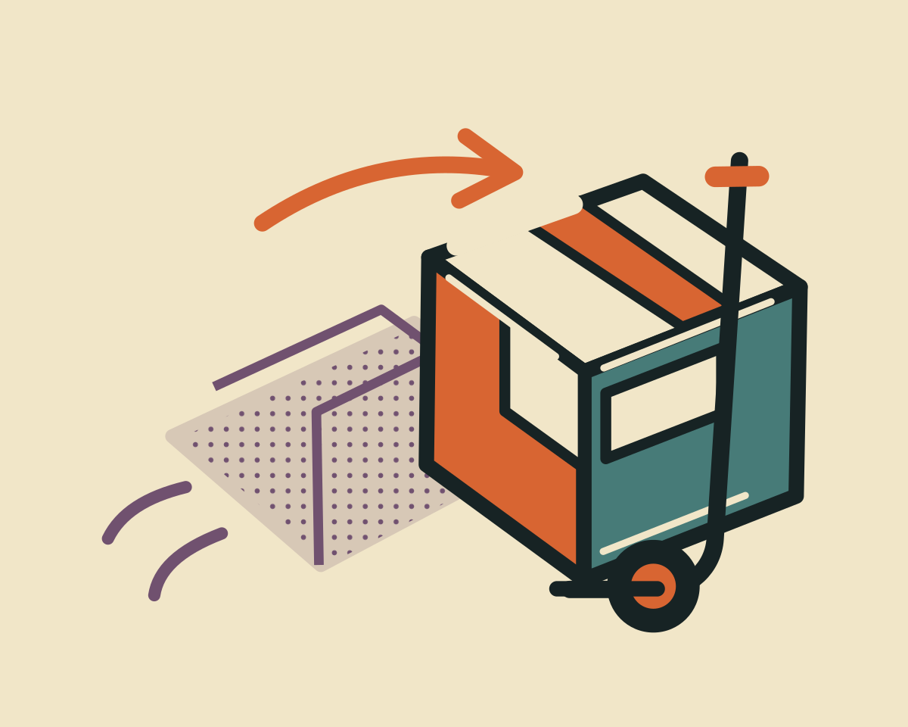
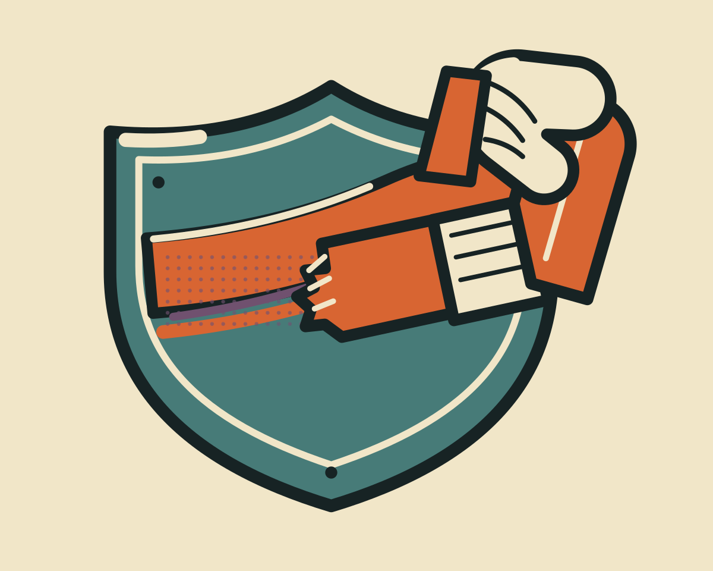
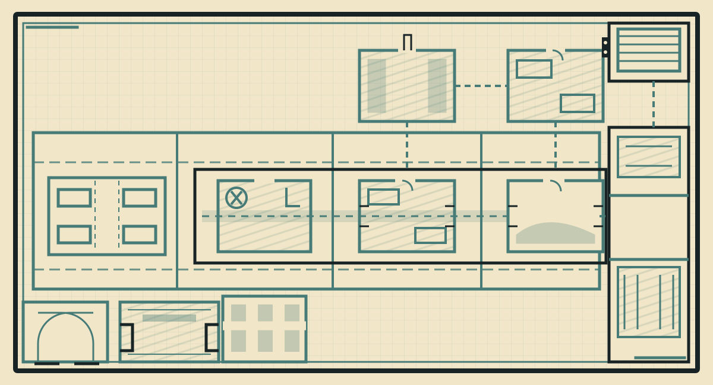

One intentional break at the light edge. Heavy outer contour, fewer thin internal marks. Never an all-over wobble effect.
MOREMART / Employee print shop / Art direction
Misprinted
Tomorrow.
A safety comic on the back of an evacuation plan. Cheap paper, expensive mistakes. The store prints straight; Bob fixes it crooked.
Original vector-authored asset batch01 / Eight swatches. Four inks per drawing.
Carbon
#172324Warm stock
#F1E6C8Chalk
#FFF5DABuilder orange
#D86532Safety yellow
#E8BA45Store teal
#477B78Possession plum
#70516FReceipt red
#AC443E02 / Three marks that belong to this game
A short offset contour follows the moving object. Time slipped. It is not a glow, a rainbow fringe or a second subject.
Torn stock and a short tape patch belong to human interventions. Institutional signs remain square. Empty paper stays empty.
03 / Temporal tools — first production set

Repeat the action, not a second inventory card.
A physical promise to keep one chosen thing.

The actual tool comes back. No conjured duplicate.

The delivery arrives early. Its future still has to catch up.

The same useful protection, laid down once more.
04 / Archived print-map study

This vector floor plan is an archived MOREMART style study, not the active game background. The later walkable pixel-art store and its timeline remain preserved but inactive. The current Kestrel combat experience instead presents an illustrated spaceship viewscreen above physical cards. Its bridge, ships and card actions are original hand-authored Canvas artwork; no model-generation claim is made. The former generated store-environment request is parked with the MOREMART direction.
05 / Reject the generic version
No glossy 3D, soft concept-art rendering, neon runes, generated lettering, random grunge, rainbow accents, implausible hands or matchup-specific victims. No tiny detail that only works in the source file. Start from an action silhouette, not a pile of style adjectives.
Review at full size, a 150px card, centered 1.25:1 crop, grayscale and on the actual lit game card. Keep a recognizable tool, a readable grip and room to breathe.